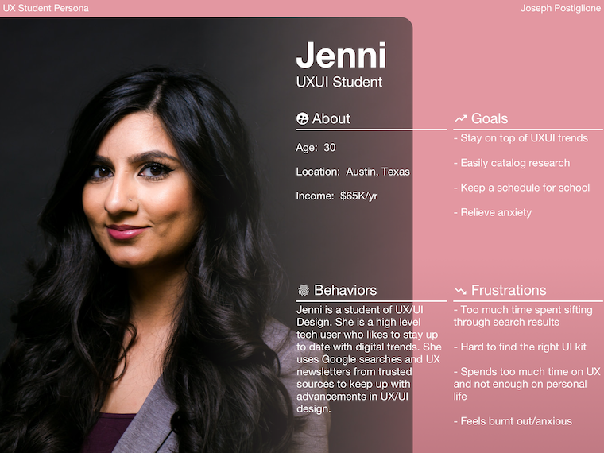
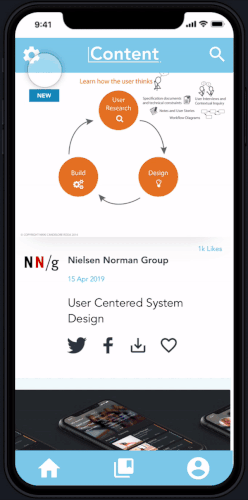

Content App
Why is learning about user experience so...difficult?

Project Overview
- My Roles: User Research, User Testing, Interaction Design, Visual Design
- Platform: Mobile
- Time Frame: 8 Weeks
- Tools: Paper Prototypes, Figma, Invision
The Problem
Students of UX are inundated with news, articles, techniques, and theory when searching for information on the subject. How can we improve upon this experience and create a space that encourages learning while maintaining a calm mindset.
The Process
- Explore the mindsets that students have while studying
- Ideate based on research
- Develop and test wireframes
- Iteration and prototype testing
User Research
- Interviewees: 5
- Requirements: Must currently be studying User Experience or User Interface Design
- Enrollment: General Assembly, ACC, Independent
To inform a persona and analyze the problem space I began conducting exploratory research with 5 current students of UX/UI. I collected information on their relationship with the field, their study habits, their favorite sources of information, and any pain points that may arise while searching for said information.
“...a source of anxiety”
- UX Student
The greatest learning to come from the exploratory research phase was that every student interviewed felt the growing field of UX/UI made them anxious, overwhelemed, and stressed. Each student had developed different means of coping, but all student's solutions involved a mobile application.
User Persona
From the data I collected during my generative research I synthesized a persona. Meet Jenni, a thirty-something living in Austin, Texas. She likes to keep up to date with UX/UI trends but sometimes is overwhelmed by the onslaught of new information that seems to come daily. She hopes to do well in school so she may land a job quickly once she graduates. I kept this persona at the center of my process during the ideation and design phase.
Ideation and Wireframes

I began an ideation sprint with a few rounds of crazy 8's. From there came the idea of a social media inspired news feed but tailored to the UX/UI student. I drew preliminary site maps and user flows to help form the initial information architecture and imagine how a user would navigate through the interface.

Once my ideation sprint was complete I wireframed out a simple news feed that users could curate from a list of popular, vetted sources. When the user felt they needed a break from learning (or after a predetermined amount of time) they could access an alternative mode called “Relaxation Mode.” This alternate feed would also be user curated, but would instead focus on videos and topics the user found relaxing.
Usability Testing Results
I was not sure why the relaxation page was separate from the main feed.
- UX Student A
Likes that it is familiar like instagram.
- UX Student B
Relaxation page needs some more signifiers.
- UX Student C
To validate the wireframes I developed a simple task completion test for users. While users responded positivly to the news feed and the curation features, there was an almost unanimous concensus that "Relaxation Mode" was hard to discover and confusing to use.
After researching the subject I found that mode slips and low discoverability were common issues when using modes on mobile.
Iterate & Prototype
After iterating on the initial design I retested the prototype with the features of relaxation mode built into the main functionality of the app. Users could now scroll through vetted, targeted articles with an occasional “healthy” distraction. This allows the user to take a break from learning without abandoning their search for knowledge completely by leaving the app.
